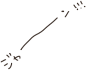
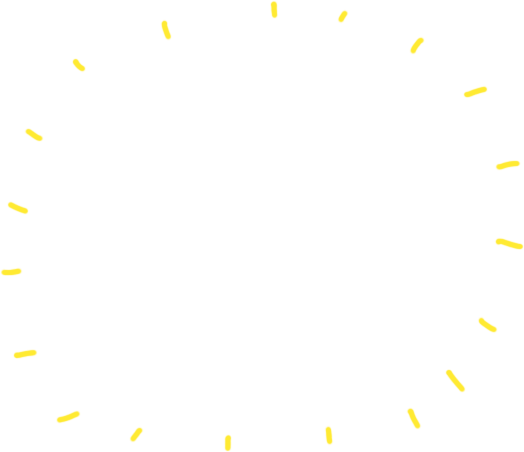
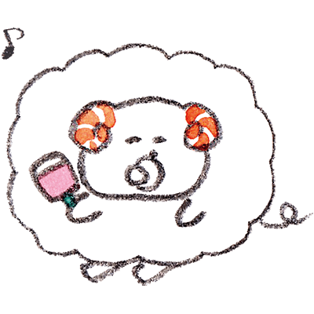
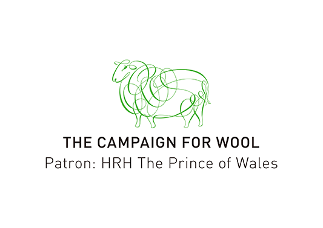

あなたの結果は…



わ～、赤ちゃんみたいにすべすべ！
その手触りから、みんなに撫でられまくる
人気者かつ母性本能までくすぐるひつじ。
その手触りから、みんなに撫でられまくる
人気者かつ母性本能までくすぐるひつじ。
わ～、すべすべ！みんなに撫でられまくり、ありがたがられるお地蔵様のようなひつじちゃんです。誰にも攻撃されないよう、表情は常に笑顔。人見知りで、恥ずかしがり屋ですが、一度仲良くなるとべったりになります。学校、サークル、職場など場所ごとに甘やかしてくれる人を確保。不安になるとすぐ「帰りたい」と言います。恋愛では、ほっとけない！と異性がわらわら寄ってきますが、いざ付き合うと「ねえ、好き？」攻撃が激しすぎて疲れます。
ウールのメリット手触りがいい
ふんわり柔らかなウールは、伸縮性や復元力、繊維の細さによる優れたドレープ力を持ち合わせ、その特徴がウール特有の手触りの良さになっています。


キャンペーン・フォー・ウールは、英国のチャールズ皇太子(プリンス・オブ・ウェールズ)の提唱によって展開されるグローバルキャンペーンです。2010年に始まったこのキャンペーンのミッションは、合成繊維に対し、天然で再生可能、生分解性のある繊維としてのウールの普及を促進することです。ファッション産業においてウールを代表する世界最大の羊毛業界団体であるザ・ウールマーク・カンパニー、英国羊毛公社、キャンペーン・フォー・ウール・ニュージーランド・トラスト、ケープ・ウールズ・オブ・サウスアフリカ、ヴァイキング・ウール・オブ・ノルウェー、米国羊毛協議会の6団体が資金提供を行っています。
Amazon Fashion Week TOKYOにて、イギリスのロックバンドブラ―の元ベーシストのアレックス・ジェイムスが、プレゼンターをつとめたドキュメンタリー映画 “Slowing Down Fast Fashion”の日本初となる上映会が開催されます。